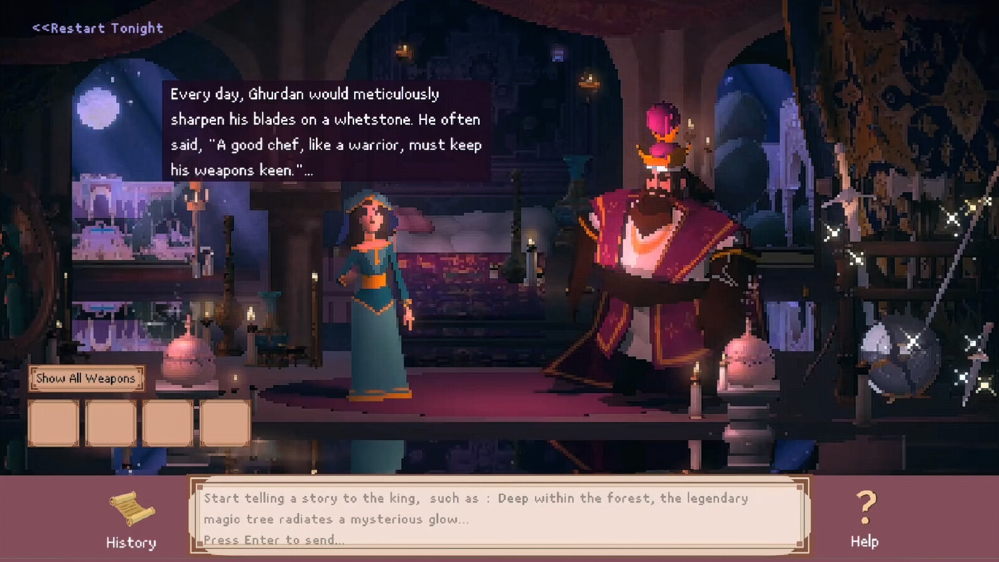
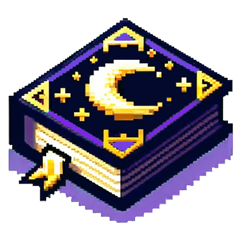

Background
Ada Eden is an independent game development team founded by Yuqian Sun, an AI narrative researcher and artist based in London. The team’s first project is 1001 Nights, in which players take on the role of Shahrzad, a young woman married to a murderous king. The player, as Shahrzad has the power to turn language into reality. Shahrzad must avoid execution at dawn by creating and telling stories that prompt the king to mention words such as “sword”, “shield” or other types of weapon. These items will appear in the game world and can later be used by Shahrzad to fight the king. The game’s mechanics are made possible by the use of language models to create story and dialogue interactions with the king. Language models are also used to summarise player-created stories and prompt image-generation models to create visual depictions of story scenes. These images are then presented in-game.

Screenshot from 1001 Nights, copyright Yuqian Sun / Ada Eden.
Application of AI
The earliest version of 1001 Nights was developed in 2020, when Sun was a master’s student at Goldsmiths, University of London. The original game demo used a fine-turned version of OpenAI’s GPT-2 model, but in a 2023 paper, Sun et al. describe how:
Players guide the LLM-driven King in co-creating narratives, with GPT-4 employing LLM reasoning methods to ensure story consistency. As these narratives progress, the depicted world is dynamically generated and visualized through Stable Diffusion, blurring the boundaries between narrative and in-game reality.
In their paper, Sun and colleagues propose the term “AI-Native games” to categorise “innovative games where GenAI is fundamental to the game’s novel mechanics and very existence”.
“When we started this game as an art and academic project, our guiding principle was to use AI only to create novel gaming experiences that were previously impossible, not to replace human creativity in any way. In other words, without AI technology, the game mechanics could not be realized. Inspired by the ancient Persian folklore, the game’s soul comes from us, the human creators, not the AI technology itself. AI is just the means by which this vision is brought to life and shared with you.”

Quote taken from Ada Eden’s AI content disclosure statement for 1001 Nights. Image shows a demo of the game on display at a public event.
Applying the CoSTAR Foresight Lab AI roadmap
Our AI roadmap is organised around three strategic outcomes – frameworks, targeted support and growth – and driven by nine recommendations that seek to align technological advancement with ethical responsibility and economic opportunity, ensuring long-term growth and success of the UK screen sector.
How this case study aligns with the roadmap
- Responsible AI
- While exploring the storytelling potential of generative AI technologies, Ada Eden’s Yuqian Sun is actively engaging with ethical debates surrounding its use. Her A MAZE. / Berlin talk in October 2024 explores questions around human agency over AI technologies, narratives and outputs. Ada Eden positions its game as an example of how “technology can be an actor, while human creators become the directors who shape it in artistic and innovative ways”.
- Insight
- As a continuation of an academic project, and an experiment in “AI-Native” game design, Sun and colleagues have documented 1001 Nights’ conceptual development, AI workflow and technical implementation across two academic papers.
- Public transparency
- The 1001 Nights store page on Steam has an extensive AI content disclosure statement. The developers also invite players to share “any concerns, suggestions, or questions about our AI-generated content and processes” to “help us improve and become more considerate”.
- Independent creation
- 1001 Nights is an example of UK-based creators leveraging AI technologies to pursue new storytelling ideas, formats and concepts.